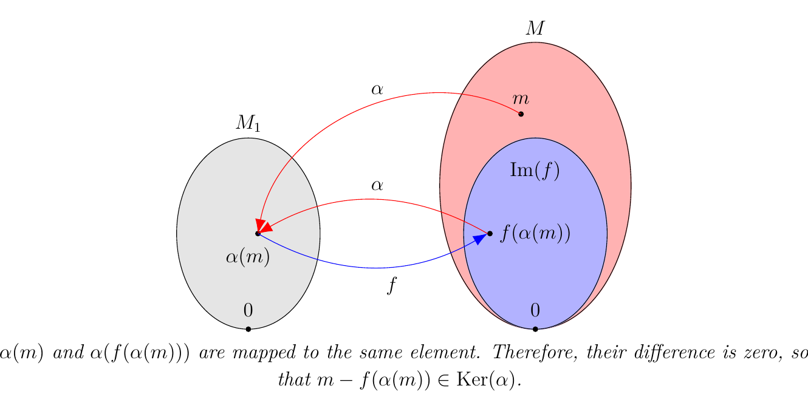
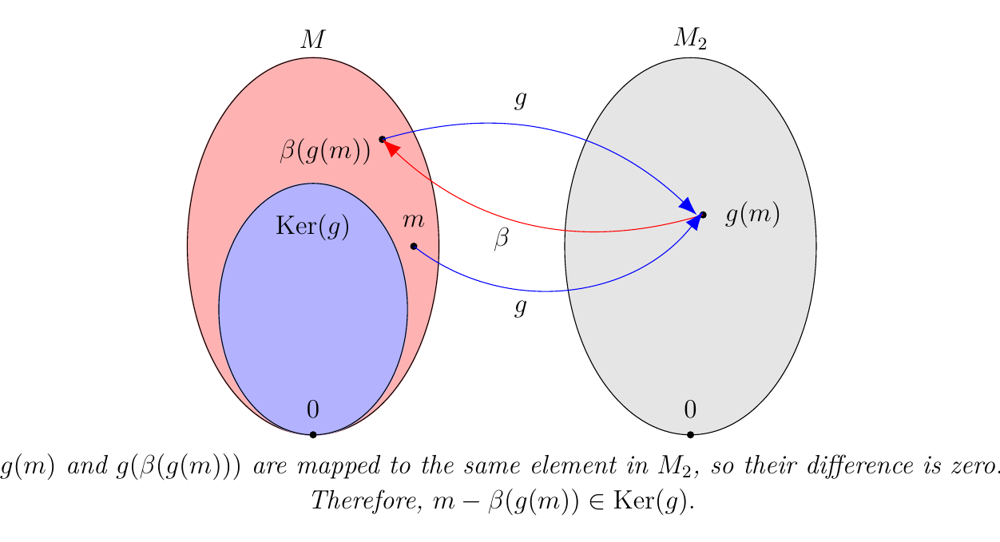
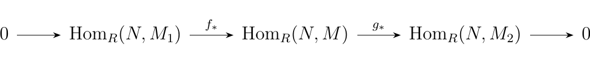
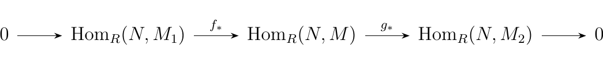
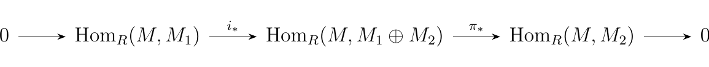

3.5. Exact Sequences and the Hom Functor.
This section will be the first encounter with the extremely important algebraic concept of an exact sequence, which is something you may have already seen before without even knowing it.
Let \(R\) be a ring. We define a sequence of \(R\)-modules to be a chain of homomorphisms between \(R\)-modules, generally denoted as
 we say that that the above sequence is exact at \(M_i\)
if \(\im(f_i) = \ker(f_{i+1})\). Hence, an exact sequence is a
sequence which is exact at every \(M_i\).
we say that that the above sequence is exact at \(M_i\)
if \(\im(f_i) = \ker(f_{i+1})\). Hence, an exact sequence is a
sequence which is exact at every \(M_i\).
\noindent Short Exact Sequences.\ Looking at "short" exact sequences aids out analysis of longer or infinite exact sequences.
Let \(M_1, M_2\) and \(M\) be \(R\)-modules. Then
-
[1.] The sequence \begin{tikzcd}[column sep = \smallish] 0 \arrow[r] & M_1 \arrow[r, "f"] & M
\end{tikzcd} is exact if and only if \(f\) is injective. -
[2.] The sequence \begin{tikzcd}[column sep = \smallish] M \arrow[r, "g"] & M_2 \arrow[r] & 0
\end{tikzcd} is exact if and only if \(g\) is surjective. -
[3.] The sequence \begin{tikzcd}[column sep = \smallish] 0 \arrow[r] & M_1 \arrow[r, "f"] & M \arrow[r, "g"] & M_2 \arrow[r] & 0
\end{tikzcd} is exact if and only if \(f\) is injective and \(g\) is injective.
- [1.]
(\(\implies\)) Suppose the sequence \begin{tikzcd}[column sep = \smallish] 0 \arrow[r] & M_1 \arrow[r, "f"] & M
\end{tikzcd} is exact. Then we have that \(\im(0) = \ker(f) \implies \ker(f) = \{0\}\). Therefore we see that \(f\) is injective.
(\(\impliedby\))Now suppose \(f\) is injective. Then \(\ker(f) = 0\). Since
\(\im(0) = \{0\}\) we see \(\im(0) = \ker(f)\), so that the
sequence \begin{tikzcd}[column sep = \smallish]
0 \arrow[r] & M_1 \arrow[r, "f"] & M
\end{tikzcd}
is exact.
- [2.] (\(\implies\)) Suppose the sequence
\begin{tikzcd}[column sep = \smallish]
M \arrow[r, "g"] & M_2 \arrow[r] & 0
\end{tikzcd} is exact. Then we see that \(\im(g) = \ker(0) = M_2\), since the zero map simply takes all of \(M_2\) and sends it to \(0\). Hence we see that \(g\) is surjective.
(\(\impliedby\)) Now suppose \(g\) is surjective. Then \(\im(g) = M_2\) and we also have that \(\ker(0) = M_2\). Therefore \(\im(g) = \ker(0)\) so that we have an exact sequence.
- [3.] By applying (1.) and (2.), the result follows.
The above proposition offers the following definitions.
Let \(M_1, M_2\) and \(M\) be \(R\)-modules. If the sequence
\
 is exact then we say it forms an \textbf{short exact
sequence}. Furthermore, if there exists an \(R\)-module \(N\) such
that \(M = N \oplus \im(f) = N \oplus \ker(g)\) (since \(\im(f) =
\ker(g)\)) then we say the above sequence is \textbf{split
exact}.
is exact then we say it forms an \textbf{short exact
sequence}. Furthermore, if there exists an \(R\)-module \(N\) such
that \(M = N \oplus \im(f) = N \oplus \ker(g)\) (since \(\im(f) =
\ker(g)\)) then we say the above sequence is \textbf{split
exact}.
In this case, we say \(N\) or \(\im(f)\) is a \textbf{direct
summand} of \(M\).
We can offer a few short exact sequences with some familiar objects. \ \ Examples.
- [1.] Let \(M\) be an \(R\)-module with a submodule \(N\). If
\(i:N \to M\) is the inclusion map and
\(\pi: M \to M/N\) is the projection map, then the sequence
\
 s exact. \
\(\bm{\im(i) \subset \ker(\pi)}\). Observe
that if \(n \in N\) then
s exact. \
\(\bm{\im(i) \subset \ker(\pi)}\). Observe
that if \(n \in N\) then
so that \(\im(i) \subset \ker(g)\). \ \(\bm{\ker(\pi) \subset \im(i)}\). Suppose \(m \in \ker(\pi)\). Then we see that \(\pi(m) = m + N = N\), so that \(m \in N\). Since \(m \in N\), we know that \(i(m) = m\). Therefore \(m\) is the image of some element in \(M\) mapped by \(i\) (namely, just \(m\) itself). Hence \(\ker(\pi) \subset \im(i)\).
With both directions, we can conclude that \(\im(i) = \ker(\pi)\) so so that the sequence is exact.
-
[2.] Let \(N\) and \(P\) be \(R\)-modules. If we define \(i':N \to N \oplus P\) where \(i'(n) = (n, 0)\) and \(\pi': N \oplus P \to P\) where \(\pi'(n, p) = p\), we see that the sequence \ is exact. We can realize this by simply observing that \(\ker(\pi')\) is the set of all elements \((n, 0) \in N \oplus P\), which is exactly the image of \(i'\). Therefore \(\im(i') = \ker(\pi')\), so that the sequence is exact.
-
[3.] The sequence \
 where \(f:\ZZ_p \to \ZZ_{pq}\) is given by \(f(n) = qn\) and
\(g: \ZZ_{pq} \to \ZZ_q\) is given by \(g(n) = n \mbox{ mod } q\),
then this sequence is exact. In fact, it is a split exact sequence.
From group theory, we know that
where \(f:\ZZ_p \to \ZZ_{pq}\) is given by \(f(n) = qn\) and
\(g: \ZZ_{pq} \to \ZZ_q\) is given by \(g(n) = n \mbox{ mod } q\),
then this sequence is exact. In fact, it is a split exact sequence.
From group theory, we know that
if and only if \(m\) and \(n\) are coprime. In our case, \(p\) and \(q\) are distint primes and hence are coprime so that \(\ZZ_{pq} \cong \ZZ_p \oplus \ZZ_q\). We'll later show that this will be sufficient to conclude that this is a split sequence.
- [4.] If instead we have the sequence \ where \(f:\ZZ_p \to \ZZ_{p^2}\) is given by \(f(n) = pn\) and \(g: \ZZ_{p^2} \to \ZZ_p\) is given by \(g(n) = n \mbox{ mod }p\), then this becomes an exact sequence. However, this is not split exact as \(p\) is obviously not comprime with itself, and hence
which is why this is not a split exact sequence.
The last two examples can be generalized into a theorem, which include other criterion for when a short exact sequence is split exact.
Let \(M_1, M_2\) and \(M\) be \(R\)-modules such that
\
 is exact. Then the following are equivalent:
is exact. Then the following are equivalent:
-
[1.] There exists a homomorphism \(\alpha : M \to M_1\) such that \(\alpha \circ f = 1_{M_1}\)
-
[2.] There exists a homomorphism \(\beta: M_2 \to M\) such that \(g \circ \beta = 1_{M_2}\)
-
[3.] The above sequence is split exact.
Furthermore, we see that
\vspace{-.5cm}
\begin{description} \item[(\(\bm{1 \implies 3}\)).] Suppose there exists an \(\alpha : M \to M_1\) such that \(\alpha \circ f = 1_{M_1}\). Let \(m \in M_1\). Then observe that
where in the third step we used the fact that \(\alpha \circ f = 1_{M_1}\), and hence \(\alpha(f(m)) = m\) for all \(m \in M_1\). Hence, \(m - f(\alpha(m)) \in \ker(\alpha)\).
\  Since \(f: M_1 \to M\) is injective, we see that \(\alpha: M \to M_1\) is surjective. To see this, let \(m' \in M_1\). Then there exists an \(m'' \in M\) such that \(\alpha(m'') = m'\); namely, \(m'' = f(m')\) works.
Since \(\alpha\) is surjective, we see that
That is, \(f(\alpha(M)) = f(M_1) = \im(f)\). And because \(\textcolor{red}{m - f(\alpha(m)) \in \ker(\alpha)}\) for all \(m \in M\), we see that \(m \in \im(f) + \ker(\alpha)\) for all \(m \in M\). Hence, \(M \subset \im(f) + \ker(\alpha)\). But both \(\im(f)\) and \(\ker(\alpha)\) are subsets of \(M\). Therefore, \(M = \im(f) + \ker(\alpha)\).
Now let \(x \in \ker(\alpha) \cap \im(f)\). Then \(f(y) = x\) for some \(y \in M_1\), and \(\alpha(x) = 0\) as well. Hence,
But \(\alpha \circ f = 0\), which implies that \(y = 0\).
Therefore \(\ker(\alpha) \cap \im(f) = \{0\}\).
\
 By Theorem
1.\ref{fin_module_sums}, we see that this implies that
By Theorem
1.\ref{fin_module_sums}, we see that this implies that
Hence, \(M\) is split exact as \(\im(f)\) is a direct summand of \(M\).
\item[(\(\bm{2 \implies 3}\)).] Suppose (2) holds. We'll show that \(\textcolor{blue}{m - \beta(g(m)) \in \ker(g)}\) for all \(m \in M\).
To show this, observe that
where in the second step we used the fact that \(g \circ \beta = 1_{M_2}\). Therefore, \(\textcolor{blue}{m - \beta(g(m)) \in \ker(g)}.\)
\ 
Now note that
where in the second step we used the fact that \(g\) is surjective. That is, \(\beta(g(M)) = \beta(M_2) = \im(\beta)\). Therefore we see that
for all \(m \in M\) which implies that \(M \subset \im(\beta) + \ker(g)\). But since \(\im(\beta)\) and \(\ker(g)\) are both subsets of \(M\), we see that \(M = \im(\beta) + \ker(g)\).
Now let \(m' \in \im(\beta) \cap \ker(g)\). Then there exists an \(m_2 \in M_2\) such that \(\beta(m_2) = m'\). Furthermore, since \(m' \in \ker(g)\),
since \(g \circ \beta = 1_{M_2}\). Hence, \(m_2 = 0\), so that
\(\beta(m_2) = 0 = m\). Therefore \(m = 0\), so that
\(\im(\beta) \cap \ker(g) = \{0\}\).
\

By Theorem 1.\ref{fin_module_sums}, we have that
so that \(M\) is split exact, as one of its direct summands is \(\ker(g)\).
\item[(\(\bm{1 \implies 2}\)).] Suppose (1) holds. Construct a function \(\beta: M_2 \to M\) defined by
where \(g(v) = u\). Since \(G\) is surjective, we know that such a \(v\) exists, although we don't know if it is the only \(v \in M\) which maps to \(u\), and if that could cause us problems. Thus we'll show that this definition is well defined (i.e. independent of the choice of \(v\)).
\begin{description} \item[Well-defined.] Suppose \(g(v') = u\) for some other \(v' \in M\). Then
We will prove the conclusion made in red, i.e., \(\textcolor{red}{(v - v') - f(\alpha(v - v'))} = 0.\) \
To see this, first note that, as we proved earlier, \(\textcolor{red}{x - f(\alpha(x))} \in \ker(\alpha)\) for all \(x \in M\). Hence, \(\textcolor{red}{(v - v') - f(\alpha(v - v'))} \in \ker(\alpha)\). \
Furthermore, since \(g(v) = g(v')\), we see that \(g(v - v') = 0 \implies v - v' \in \ker(g)\). But \(\ker(g) = \im(f)\), so that \(\textcolor{red}{v - v'} \in \im(f)\). Obviously \(\textcolor{red}{f(\alpha(v - v'))} \in \im(f)\) for any \(v \in M\), so that \(\textcolor{red}{(v - v') - f(\alpha(v - v'))} \in \im(f).\) \
Thus we have that \(\textcolor{red}{(v - v') - f(\alpha(v - v'))} \in \im(f)
\cap \ker(\alpha) = \{0\}\), so that \(g(v) - g(v') =
0\).
\end{description}
Next observe that for any \(u \in M_2\) we have that
where in the second step we used the fact that \((g \circ f) = 0\) as \(\ker(g) = \im(f)\). Thus we have that \(g \circ \beta = 1_{M_2}\), so that such a desired \(\beta: M_2 \to M\) exists.
\item[\(\bm{(2 \implies 1)}\).] Suppose (2) holds. Construct a function \(\alpha : M \to M_1\) defined by
Note that we must be careful since we're dealing with an inverse. To even make such a statement, we first recall that \(f\) is injective, so an inverse from \(f^{-1}: \im(f) \to M\) certainly exists. But it only exists if its domain is at most \(\im(f)\). Thus we check that \(\textcolor{blue}{m - \beta(g(m)) \in \im(f)}\) for all \(m \in M\).
Earlier we proved that \(\textcolor{blue}{m - \beta(g(m)) \in \ker(g)}\), and we know that \(\ker(g) = \im(f)\) as the sequence is exact. Therefore, we already know that \(\textcolor{blue}{m - \beta(g(m)) \in \im(f)}\).
Hence, \(\alpha\) makes sense since \(f^{-1}\) exists and \(m - \beta(g(m)) \in \im(f)\) for all \(m \in M\).
Now observe that for any \(m_1 \in M_1\),
since \(g(f(m_1)) = 0\) for all \(m_1 \in M\). Thus such a desired \(\alpha\) exists.
\item[(\(\bm{3 \implies 1}\) \& 2).] Suppose that
where \(M' = \im(f) = \ker(g)\), and \(M''\) is some other summand of \(M\). Define a projection map \(\pi: M \to M'\) as
and similarly the injective map \(i: M'' \to M\) as \(i(m'') = m''\) for all \(m'' \in M\).
Consider \(\pi \circ f: M \to M'\). Since \(M' = \im(f)\), this is clearly an isomorphism. Now define \(\alpha = (\pi \circ f)^{-1} \circ \pi_1\) and observe that \(\alpha \to M \to M_1\) and
Hence, \((3) \implies (1)\).
Similarly, observe that \(g \circ i: M'' \to M_2\) is also an isomorphism. To see this, first observe that \(M' = \ker(g)\), and since \(M \cong M' \oplus M''\) we know that \(M' \cap M'' = \{0\}\). Therefore, if \(m \in M''\) is nonzero, then \(m \not\in \ker(g)\). Hence \(g(i(m)) \ne 0\) if and only if \(m = 0\), so that \(g \circ i\) is one to one. Now surjectivity is clear, as \(g\) itself is a surjective function.
Now define \(\beta = i \circ (g \circ i)^{-1}\), and observe that \(\beta : M_2 \to M\) and
Therefore \((3 \implies 2)\), which completes the entire proof. \end{description}
That was a long ass proof, but the theorem is very powerful and worthwhile. Next, we'll reintroduce the concept of \(\hom()\). \
\noindent Inducing Homomorphisms.
\begin{minipage}{0.6\textwidth} Let \(M, N\) and \(N'\) be \(R\)-modules, and let \(\phi: M \to N\) and \(f: N \to N'\) be \(R\)-modules homomorphisms. Then we see that the diagram to the right commutes.
\end{minipage} \hfill \begin{minipage}{0.4\textwidth} \ end{minipage} \vspace{0.5cm}
\begin{minipage}{0.6\textwidth}
However, suppose we feed the above diagram with arbitrary \(\phi: M
\to N\). That is, we keep \(f: N \to N'\) fixed, but let \(\phi: M
\to
N\) vary over all possible \(\phi\). This is equivalent to grabbing
elements from the abelian group \(\hom_R(M, N)\). We can denote
this with a red arrow, to remind the reader that this arrow
"picks" \(\phi\).
\end{minipage}
\hfill
\begin{minipage}{0.4\textwidth}
\
 end{minipage}
end{minipage}
\begin{minipage}{0.6\textwidth} Note that we've described a well-defined system for assigning for each \(\phi \in \hom_R(M, N)\) a function
Also, \(f \circ \phi
: M \to N'\), so that \(f \circ \phi \in \hom_R(M, N')\). We can
denote this with a blue arrow, to communicate that
\(\hom_R(M,N')\) "accepts" \(f \circ \phi\) (after all, it is an element of
the set).
\end{minipage}
\hfill
\begin{minipage}{0.4\textwidth}
\
 end{minipage}
\vspace{0.5cm}
end{minipage}
\vspace{0.5cm}
\begin{minipage}{0.6\textwidth}
What we've just described is an induced function,
which we denote as \(f_*\).
That is, if we fix \(f\), then we can create a homomorphism
\(f_*\) between the abelian groups \(\hom_R(M, N)\) and
\(\hom_R(M, N')\), where for each element \(\phi \in \hom_R(M, N)\)
we assign it the function \(f \circ \phi \in \hom_R(M, N')\).
\end{minipage}
\hfill
\begin{minipage}{0.4\textwidth}
\
 end{minipage}
end{minipage}
\noindent \(\hom_R(- , M)\).\ The we restate our results. If \(N, N'\) are \(R\)-module homomorphisms and \(f: N \to N'\) is an \(R\)-module homomorphism, then for any \(R\)-module \(M\) we can create an induced homomorphism
defined as
\noindent \(\hom_R(M, -)\).\ Similarly, if \(N, N'\) are again \(R\)-modules and \(g: N' \to N\) is a an \(R\)-module homomorphism, then for any \(R\)-module \(M\), there is an induced homomorphism
defined as
It turns out in category theory that the behavior of these functions fit the definition of a functor. \(\hom_R(- , M)\) is known as a covariant functor, while \(\hom_R(M, -)\) is known as a contravariant functor. We won't delve too much into this.
\textcolor{NavyBlue}{Since the \(\hom_R\) groups are abelian, we see that \(f_*\) and \(g_*\) are in fact group homomorphisms. If \(R\) is commutative, then we know that \(\hom_R\) forms an \(R\)-module in which case \(f_*\) and \(g_*\) become \(R\)-module homomorphisms.} \
Now suppose a family of \(R\)-modules \(\{M_i \mid i \in \mathbb{N}\}\) associated with a
set of homomorphisms \(\{f_i \mid f_i :M_{i-1} \to M_i, i
\in \mathbb{N}\}\) for a long sequence, not necessarily exact.
\
hen if we apply the \(\hom_R(M, -)\) functor,
then we see that the above sequence implies a sequence between the
\(\hom\) groups:
\
 nd applying the \(\hom_R(-, M)\) functor we get
\
nd applying the \(\hom_R(-, M)\) functor we get
\
 Thus the long sequence of \(R\)-modules implies the existence of two other long
sequences of abelian groups. The interesting thing is that the two sequences are
similar but differ in the direction of the arrows (this is why we
denote the functions separately with an asterik either in the
subscript or superscript). Furthermore,
the direction of the arrows in the first seuqence of \(M_i\)
\(R\)-modules determines the direction of the arrows in the other
two sequences.
Thus the long sequence of \(R\)-modules implies the existence of two other long
sequences of abelian groups. The interesting thing is that the two sequences are
similar but differ in the direction of the arrows (this is why we
denote the functions separately with an asterik either in the
subscript or superscript). Furthermore,
the direction of the arrows in the first seuqence of \(M_i\)
\(R\)-modules determines the direction of the arrows in the other
two sequences.
Let \(M_1, M\) and \(M_2\) be \(R\)-modules, and suppose \(f:M_1 \to M\) and \(g:M \to M_2\) are \(R\)-modules. Then the sequence \begin{equation} \begin{tikzcd} 0 \arrow[r] & M_{1} \arrow[r, "f"] & M \arrow[r, "g"] & M_{2} \end{tikzcd} \end{equation} is exact if and only if the sequence \begin{equation} \begin{tikzcd} 0 \arrow[r] & \hom_R(N,M_{1}) \arrow[r, "f_"] & \hom_R(N, M) \arrow[r, "g_"] & \hom_R(N,M_{2}) \end{tikzcd} \end{equation} is an exact sequence of abelian groups. Furthermore, the sequence \begin{equation} \begin{tikzcd} M_{1} \arrow[r, "f"] & M \arrow[r, "g"] & M_{2} \arrow[r] & 0 \end{tikzcd} \end{equation} is exact if and only if \begin{equation} \begin{tikzcd} \hom_R(M_{1}, N) & \hom_R(M, N) \arrow[l, swap, "f^"] & \hom_R(M_{2}, N)\arrow[l, swap, "g^"] & 0 \arrow[l] \end{tikzcd} \end{equation} is an exact sequence of abelain groups.
\textcolor{MidnightBlue}{To show that the sequence between the \(\hom\) abelian groups is exact, we need to check that (1) \(f_*\) is injective and (2) \(\im(f_*) = \ker(g_*)\). } \begin{description} \item[\(\bm{f_*}\) is injective.] Suppose that \(f_*(\psi) = 0\) for some \(\phi \in \hom_R(N, M_1)\). Then
for all \(n \in M\). However, \(f\) is injective, so that \(\ker(f) = \{0\}\). Therefore \(\psi(n) \in \ker(f) = \{0\}\) for all \(n\), which means that \(\psi\) is the zero function. Therefore \(\ker(f_*) = \{0\}\) (where the zero here stands for the zero function between \(N\) and \(M_1\)) so that \(f_*\) is injective.
\item[\(\bm{\im(f_*) \subset \ker(g_*)}\).] Let \(\phi \in \hom_R(N, M_1)\). Then observe that
since \(g \circ f = 0\) as \(\im(f) = \ker(g)\). Therefore we see that \(\im(f_*) \subset \ker(g_*)\).
\item[\(\bm{\ker(g_*) \subset \im(f_*)}\).] Let \(\psi \in \hom_R(N, M)\) and suppose that \(g_*(\psi) = 0\). Note that
for all \(n \in N\). Since \(\ker(g) = \im(f)\), we know for all \(n \in N\) that \(\psi(n) \in \im(f)\). Therefore, there exist a set of \(y \in M_1\) such that \(f(y) = \psi(n)\), and since \(f\) is one to one this correspondence is uniquely determined.
Thus construct a function \(\tau: N \to M_1\) such that
As we discussed, this function is well defined since \(f\) is one-to-one, and therefore there is always a unique value of \(f^{-1}(\psi(n))\) for each \(n\). Now note that this function is an \(R\)-module homomorphism since, for any \(n_1, n_2 \in N\) and \(a \in R\)
and
Therefore we see that \(\tau \in \hom_R(N_1, M)\) and that
Hence, \(\psi \in \im(f_*)\). Hence \(\ker(g_*)
\subset \im(f_*)\), which proves that \(\ker(g_*) =
\im(f_*)\).
\end{description}
\textcolor{MidnightBlue}{To prove the reverse direction, we
will assume the exactness of the second sequence and show that
(1) \(f\) is injective and (2) \(\im(f) = \ker(g)\).}
\begin{description} \item[\(\bm{f}\) is injective.] Suppose that sequence \ref{0_homM1_homM_homM2_exact_sequence} is exact for all \(R\)-modules \(N\). Then let \(N = \ker(f)\), and since \(N \subset M_1\) consider the inclusion map \(i: N \to M_1.\) Note however that for any \(n \in N\) we see that
since \(\im(i) = \ker(f)\). Hence, \(i \in \ker(f_*)\). However, since \(f_*: \hom_R(N, M_1) \to \hom_R(N, M)\) is injective, we know that \(\ker(f_*) = 0\). Therefore we have that \(i = 0\), (i.e. it is a zero map). But since we defined this to be the inclusion map, we have that \(N = \{0\}\). Hence, \(\ker(f) = N = \{0\}\), so that \(f\) is one to one.
\item[\(\im(f) \subset \ker(g)\).] Let \(N = M_1\), and let \(1_{M_1}:M_1 \to M_1\) be the identity. Then we see that
by exactness of sequence \ref{0_homM1_homM_homM2_exact_sequence}. Therefore we see that \(\im(f) \subset \ker(g)\).
\item[\(\ker(g) \subset \im(f)\).]
\end{description}
Let \(N\) be an \(R\)-module. If
\
 is a split exact sequence of \(R\)-modules, then
\

and
\
is a split exact sequence of \(R\)-modules, then
\

and
\
 are split exact sequences of abelian groups (\(R\)-modules if
\(R\) is commutative).
are split exact sequences of abelian groups (\(R\)-modules if
\(R\) is commutative).
\textcolor{MidnightBlue}{By the previous theorem, we only need to show that \(g_*\) and \(f^*\) are surjective and that the two sequences split. } Since the first sequence splits, let \(\beta: M_2 \to M\) be the function which splits the first sequence. Consider the function \(\beta_*: \hom_R(N, M_2) \to \hom_R(N, M)\). Then observe that for any \(\psi \in \hom_R(N, M_2)\) that
Therefore, we see that \(g_* \circ \beta_* = 1_{\hom_R(M_{2}, N)}.\) Hence by Theorem 1.\ref{split_exact_lemma}, we see that \(\beta_*\) splits the second sequence. However, note also that \(g_* \circ \beta_* = 1_{\hom_R(M_{2}, N)}\) implies that \(g_*\) is surjective. Therefore the second sequence is split exact. \
As for the third sequence, consider the function \(\alpha^*: \hom_R(M_1, N) \to \hom_R(M, N)\). Note that for any \(\phi \in \hom_R(M, N)\), we have that
Hence we see that \(\alpha^* \circ f^*\) splits the third sequence. Furthermore, the fact that \(\alpha^* \circ f^* = 1_{\hom_R(M, N)}\) implies that \(f^*\) is surjective. Thus in total we have that the third sequence is in fact a split exact sequence.
The next theorem is a nice result that shows that \(\hom_R\) is somewhat of a "linear" operator.
Let \(M_1, M_2\) and \(M\) be \(R\)-modules. Then
and
\vspace{-0.7cm} These are in general isomorphisms of abelian groups, but can be isomorphisms of \(R\)-modules if \(R\) is commutative.
Consider one of our earlier examples of a split exact
sequences:
\
where \(i\) defined as \(i(m_1) = (m_1, 0)\) is the inclusion map
and \(\pi\) defined by \(\pi(m_1, m_2) = m_2\) is the projection
map. As this is split exact, we can apply the previous theorem
to gaurantee the existence of sequences
\

and
\
 which are both split exact. Then by applying Theorem
1.\ref{split_exact_lemma} we have that
which are both split exact. Then by applying Theorem
1.\ref{split_exact_lemma} we have that
and